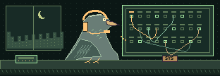

login: visiting_bird
sysop: SWITCH node: 01/01
-- today's bulletin / 17-OCT-99 ----------------
Someone patched the bakery into the observatory. If the moon needs twelve more minutes, bring a patch cord. --Switch

Your command? ▌ Choose a link or press its letter.
Watch the night operator
